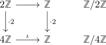

LinAlg 1 - extra wahr / falsch Aufgaben - misc (Lösungen)
Liste
Mengen
Seien $A,B,C,D$ Mengen.
i) - falsch
Dann existiert eine Abbildung $f: A \rightarrow B$
ii) - falsch
Es gilt $A \setminus (A \setminus B) = B$
iii) - wahr
Es gilt $(A \cap B) \times (C \cap D) = (A \times C) \cap (B \times D)$
iv) - wahr
Eine injektive Abbildung $f: \{1,2,3\} \rightarrow \{1,2,3\}$ ist immer surjektiv.
v) - falsch
Die Projektion
ist surjektiv.
Die Abbildung ist surjektiv gdw $A\neq \emptyset$
vi) - falsch
Eine konstante Abbildung $f: A \rightarrow B$ (für $\vert B \vert \geq 1$) ist nie injektiv.
vii) - wahr
Es existieren Mengen $A_1,A_2,A_3$ und surjektive Abbildungen $A_1 \twoheadrightarrow A_2, A_2 \twoheadrightarrow A_3$ so dass die Komposition
injektiv ist.
viii) - falsch
Sei $f: A \rightarrow B$ eine Abbildung und $U \subseteq A$. dann folgt $f^{-1}[f[U]] = U$
Die Aussage ist (nur) wahr, wenn $f$ (hinreichend) injektiv ist.
ix) - falsch
Sei $f: A \rightarrow B$ eine Abbildung und $U \subseteq B$. dann folgt $f[f^{-1}[U]] = U$
Die Aussage ist (nur) wahr, wenn $f$ (hinreichend) surjektiv ist.
x) - wahr
Seien $f: X \rightarrow Y, g: Y \rightarrow Z$ surjektive Abbildungen. Dann ist auch $g \circ f$ surjektiv
xi) - wahr
Seien $f: X \rightarrow Y, g: Y \rightarrow Z$ injektive Abbildungen zwischen endlichen Mengen. Dann ist auch $g \circ f$ injektiv
xii) - wahr
Seien $f: X \rightarrow Y, g: Y \rightarrow Z$ injektive Abbildungen. Dann ist auch $g \circ f$ injektiv
xiii) - wahr
Seien $f: X \rightarrow Y, g: Y \rightarrow Z$ Abbildungen so dass $g \circ f$ injektiv ist. Dann ist auch $f$ injektiv
xiv) - falsch
Seien $f: X \rightarrow Y, g: Y \rightarrow Z$ Abbildungen so dass $g \circ f$ injektiv ist. Dann ist auch $g$ injektiv
xv) - falsch
Seien $f: X \rightarrow Y, g: Y \rightarrow Z$ Abbildungen so dass $g \circ f$ surjektiv ist. Dann ist auch $f$ surjektiv
xvi) - wahr
Seien $f: X \rightarrow Y, g: Y \rightarrow Z$ Abbildungen so dass $g \circ f$ surjektiv ist. Dann ist auch $g$ surjektiv
xv) - falsch
Seien $f: X \rightarrow Y, g: Y \rightarrow Z$ Abbildungen so dass $g \circ f$ bijektiv ist. Dann ist auch $f$ bijektiv
xvi) - falsch
Seien $f: X \rightarrow Y, g: Y \rightarrow Z$ Abbildungen so dass $g \circ f$ bijektiv ist. Dann ist auch $g$ bijektiv
xvii) - wahr
Sei $\mathcal{P}(A)$ die Potenzmenge. Die Abbildung
ist bijektiv.
xviii) - falsch
Die Menge $\{1,1\} \subseteq \mathbb{N}$ enthält $2$ Elemente.
Gruppen
Seien $G,H$ Gruppen.
i) - wahr
Es existiert stets ein Gruppenhomomorphismus $\varphi: G \rightarrow H$
die Abbildung $\mathrm{const}_e: G \rightarrow H$ ist ein Gruppenhomomorphismus.
ii) - falsch
Es existiert eine Gruppe mit $7$ Elementen und einer Untergruppe mit $3$ Elementen.
iii) - wahr
für einen Körper $K$ ist die Gruppe $\mathrm{GL}_n(K)$ abelsch gdw. $n \leq 1$
iv) - falsch
Sei $G$ eine Gruppe und $U_1,U_2$ Untergruppen der Ordnung $2$. Dann folgt $U_1 = U_2$
z.B. $\mathbb{F}_2 \oplus 0 \subseteq \mathbb{F}_2$ und $0 \oplus \mathbb{F}_2 \subseteq \mathbb{F}_2^2$
v) - wahr
Sei $G$ eine Gruppe und $U_1,U_2$ Untergruppen der Ordnung $2$. Dann folgt $U_1 \cong U_2$, d.h. es existiert ein Gruppenisomorphismus $U_1 \cong U_2$
Folgt daraus, dass es bis auf Isomorphie nur eine Gruppe mit zwei Elementen gibt: Es gibt zwei Elemente
vi) - falsch
Sei $G$ eine Gruppe und $U_1,U_2$ Normalteiler, so dass ein Gruppenisomorphismus $U_1 \cong U_2$ existiert. Dann folgt $G/U_1 \cong G/U_2$
falsch z.B.

wobei $2 \mathbb{Z} \xrightarrow{\cdot 2} 4 \mathbb{Z}$ ein Gruppenisomorphismus ist. wobei $n \mathbb{Z} = \{n \cdot x \vert x \in \mathbb{Z}\}$
vii) - wahr
Es existiert eine Gruppe mit 2026 Elementen
wahr, z.B. $\mathbb{Z}/2026 \mathbb{Z}
viii) - wahr
Sei $K$ ein Körper, $G$ eine Gruppe und $\varphi: G \rightarrow K^{\times}$ ein Gruppenhomomorphismus. dann folgt $\{ghg^{-1}h^{-1} \vert g,h \in G\} \subseteq \mathrm{ker}(\varphi)$
ix) - wahr
Sei $\varphi: G \twoheadrightarrow H$ ein surjektiver Gruppenhomomorphismus. Ist $G$ abelsch, so auch $H$
x) - falsch
Sei $\varphi: G \twoheadrightarrow H$ ein surjektiver Gruppenhomomorphismus. Ist $H$ abelsch, so auch $G$
xi) - wahr
Sei $\varphi: G \hookrightarrow H$ ein injektiver Gruppenhomomorphismus. Ist $H$ abelsch, so auch $G$
xii) - falsch
Sei $\varphi: G \hookrightarrow H$ ein injektiver Gruppenhomomorphismus. Ist $G$ abelsch, so auch $H$
xiii) - wahr
Sei $\varphi: G \twoheadrightarrow H$ ein Gruppenisomorphismus Dann ist $G$ abelsch gdw. $H$ abelsch ist.
xiv) - falsch
Es existiert ein Normalteiler $N \trianglelefteq S_3$ mit $\vert N \vert = 2$
Wenn eine Untergruppe $N$ einen 3-Zykel enthält, dann0
xv) - falsch
Je zwei Gruppen mit 4 Elementen sind Isomorph.
z.b. $\mathbb{Z}/2 \mathbb{Z} \oplus \mathbb{Z}/2 \mathbb{Z} \not\simeq \mathbb{Z}/4 \mathbb{Z}$: Für $x \in \mathbb{Z}/2 \mathbb{Z} \oplus \mathbb{Z}/2 \mathbb{Z}$ gilt immer $x +x = 0$, während in $\mathbb{Z}/4 \mathbb{Z}$ gilt $[1] + [1] = [2] \neq 0$
xvi) - wahr
Es gilt für $g,h \in G$ die Gleichung
xvii) - falsch
Für $g \in G$ gilt: $g^2 = e \Rightarrow g = e$
xviii) - wahr
Für $g \in G$ gilt: $g^2 = g \Rightarrow g = e$
xiv) - falsch
Es gilt für $g,h \in G$ die Gleichung
xv) - wahr
Es existieren Elemente $g,h \in G \setminus \{e\}$ mit $g \cdot h = e$
xvi) - falsch
Sei $U \subseteq G$ eine Teilmenge, so dass gelte
- $1 \in U$
- $u_1,u_2 \in U \Rightarrow u_1 \cdot u_2 \in G$
Dann ist $U$ eine Untergruppe
z.b. $\mathbb{N}_0 \subseteq \mathbb{Z}$
xvii) - falsch
Sei $G$ abelsch und $U \subseteq G$ eine Teilmenge, so dass gelte
- $1 \in U$
- $u_1,u_2 \in U \Rightarrow u_1 \cdot u_2 \in G$
Dann ist Untergruppe
xviii) - falsch
Sei $G$ endlich und $U \subseteq G$ eine Teilmenge, so dass gelte
- $1 \in U$
- $u_1,u_2 \in U \Rightarrow u_1 \cdot u_2 \in G$
Dann ist Untergruppe
xix) - falsch
$(\mathbb{R}, \cdot)$ ist eine Gruppe.
da $0$ kein inverses hat
xx) - falsch
Die Alternierende Gruppe $A_{16}$ hat eine Untergruppe mit $17$ Elementen.
satz von Lagrange und $17 \not\mid 16!$ da $17$ eine Primzahl ist.
Ringe
i) - falsch
Sei $R$ ein Ring und $a,b \in R$ mit $a \cdot b = 0$. Dann folgt $a = 0$ oder $b = 0$
z.B. nullteiler